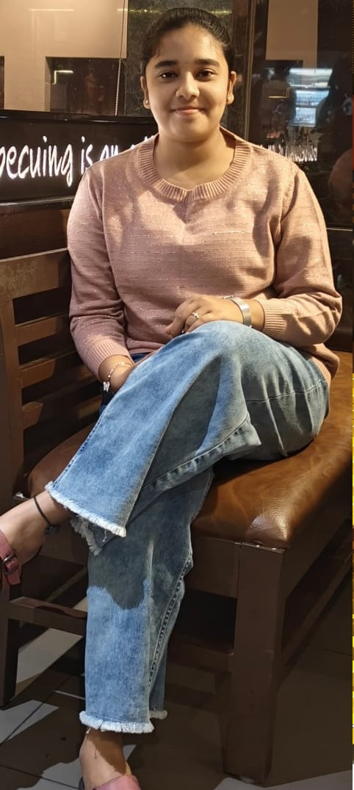
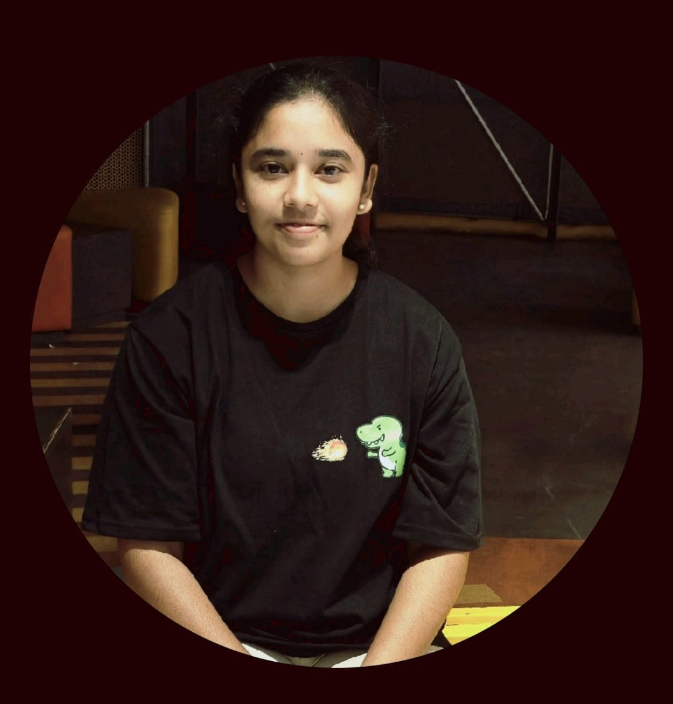
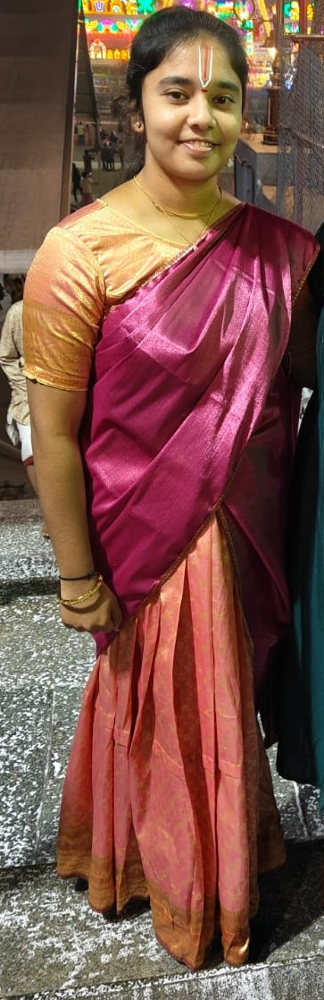

🌼
Something special,
just for you
Turn on sound & press play 🎵
Turn on sound & press play 🎵
I'm in a field of...



.jpeg)

I see forever in your...
Smile :)
Hiii 🌸
I noticed you've been distant. If there is anything that is bothering you — especially from my side — I'm here when you're ready to talk. But I won't force communication. I value clarity and consistency.
Because I feel something is not right. I feel you are being distant / becoming distant. I honestly don't know the reason, but deep down I know that I feel something's wrong. I don't get tired of asking u until u say if something's bothering u.
Because whenever there is a gap of a day, u used to msg me — been lively. But since the last few days, there's something wrong. I understand that ur health is not good and u've had busy days at work.
I understand people change, but never thought it would be in a difference of few days. I can call u as usual when there is silence from u, but I was waiting patiently, believing you are fine, praying for your safety, health and happiness.
Don't forget to smile 🙂 Be yourself. Be lively. (Don't mind me saying this — but I don't like this silence, not-lively version of u.)
If u value our bond — please come to me. Tell me what's wrong. We'll sort it out together. I am always available.
I always gave u, and am always ready and willing to give u, the most expensive gift —
MY TIME. 🕐
— Always here for you 🌼